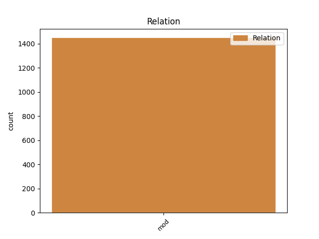
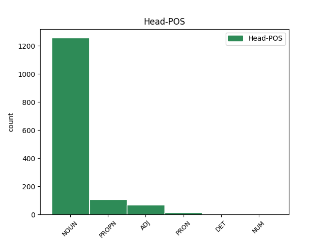
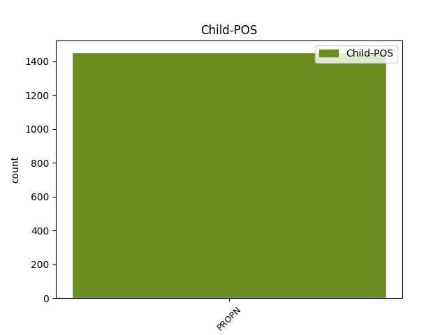

Distribution of features within this leaf



Agreement Rules sorted by frequency.
- When the dependent token is the modifer(mod) of the head token, and the head token is NOUN and the dependent token is PROPN.
1 " _ _ _ _ 0 _ _ _
2 Suomi _ _ _ _ 0 _ _ _
3 " _ _ _ _ 0 _ _ _
4 kuulemma _ _ _ _ 0 _ _ _
5 hävisi _ _ _ _ 0 _ _ _
6 Unicefin unicef PROPN N,Prop,Sg,Gen Case=Gen|Number=Sing 7 mod _ _
7 pääjohtajakilvan pääjohtajakilpa NOUN N,Sg,Gen Case=Gen|Number=Sing 0 _ _ _
8 . _ _ _ _ 0 _ _ _
1 Tuon _ _ _ _ 0 _ _ _
2 jälkeen _ _ _ _ 0 _ _ _
3 olin _ _ _ _ 0 _ _ _
4 vuoden _ _ _ _ 0 _ _ _
5 Nuoren _ _ _ _ 0 _ _ _
6 Keskustan _ _ _ _ 0 _ _ _
7 Liiton liitto PROPN N,Prop,Sg,Gen Case=Gen|Number=Sing 8 mod _ _
8 Pohjois-Hämeen pohjois-häme PROPN N,Prop,Sg,Gen Case=Gen|Number=Sing 0 _ _ _
9 piirin _ _ _ _ 0 _ _ _
10 puheenjohtajana _ _ _ _ 0 _ _ _
11 , _ _ _ _ 0 _ _ _
12 muistaakseni _ _ _ _ 0 _ _ _
13 vuosi _ _ _ _ 0 _ _ _
14 oli _ _ _ _ 0 _ _ _
15 1979 _ _ _ _ 0 _ _ _
16 . _ _ _ _ 0 _ _ _
1 Perkele _ _ _ _ 0 _ _ _
2 kyllä _ _ _ _ 0 _ _ _
3 se se PRON Pron,Dem,Sg,Nom Case=Nom|Number=Sing|PronType=Dem 0 _ _ _
4 on _ _ _ _ 0 _ _ _
5 yksi _ _ _ _ 0 _ _ _
6 torvi _ _ _ _ 0 _ _ _
7 se _ _ _ _ 0 _ _ _
8 Sundberi sundberi PROPN N,Prop,Sg,Nom Case=Nom|Number=Sing 3 mod _ _
9 siellä _ _ _ _ 0 _ _ _
10 . _ _ _ _ 0 _ _ _
1 Auton _ _ _ _ 0 _ _ _
2 nimi _ _ _ _ 0 _ _ _
3 on _ _ _ _ 0 _ _ _
4 suomalaisittain _ _ _ _ 0 _ _ _
5 ajankohtainen ajankohtainen ADJ A,Sg,Nom Case=Nom|Number=Sing 0 _ _ _
6 : _ _ _ _ 0 _ _ _
7 Wolseley wolseley PROPN N,Prop,Sg,Nom Case=Nom|Number=Sing 5 mod _ Alt=name
8 Hornet _ _ _ _ 0 _ _ _
9 ! _ _ _ _ 0 _ _ _
1 Kenen kuka DET Pron,Interr,Sg,Gen Case=Gen|Number=Sing|PronType=Int 0 _ _ _
2 luottamusta _ _ _ _ 0 _ _ _
3 hallituksen _ _ _ _ 0 _ _ _
4 pitikään _ _ _ _ 0 _ _ _
5 nauttia _ _ _ _ 0 _ _ _
6 , _ _ _ _ 0 _ _ _
7 SAK:n sak PROPN N,Abbr,Prop,Sg,Gen Abbr=Yes|Case=Gen|Number=Sing 1 mod _ _
8 vai _ _ _ _ 0 _ _ _
9 eduskunnan _ _ _ _ 0 _ _ _
10 ? _ _ _ _ 0 _ _ _
Disagree Examples:
1 Laukaan laukaa PROPN N,Prop,Sg,Gen Case=Gen|Number=Sing 6 mod _ _
2 sydäntä _ _ _ _ 0 _ _ _
3 ja _ _ _ _ 0 _ _ _
4 kuusentainta _ _ _ _ 0 _ _ _
5 esittävä _ _ _ _ 0 _ _ _
6 vaakuna vaakuna NOUN N,Sg,Nom Case=Nom|Number=Sing 0 _ _ _
1 Täällä _ _ _ _ 0 _ _ _
2 Suomessa suomi PROPN N,Prop,Sg,Ine Case=Ine|Number=Sing 10 mod _ _
3 tuommonen _ _ _ _ 0 _ _ _
4 katti _ _ _ _ 0 _ _ _
5 on _ _ _ _ 0 _ _ _
6 kuin _ _ _ _ 0 _ _ _
7 mikä _ _ _ _ 0 _ _ _
8 lie _ _ _ _ 0 _ _ _
9 vieras _ _ _ _ 0 _ _ _
10 esine esine NOUN N,Sg,Nom Case=Nom|Number=Sing 0 _ _ _
1 Pekan pekka PROPN N,Prop,Sg,Gen Case=Gen|Number=Sing 4 mod _ _
2 ja _ _ _ _ 0 _ _ _
3 Liisan _ _ _ _ 0 _ _ _
4 tulo tulo NOUN N,Sg,Nom Case=Nom|Number=Sing 0 _ _ _
1 Matka matka NOUN N,Sg,Nom Case=Nom|Number=Sing 0 _ _ _
2 Timbuktuunkin timbuktu PROPN N,Prop,Sg,Ill,Kin Case=Ill|Clitic=Kin|Number=Sing 1 mod _ _
3 kesti _ _ _ _ 0 _ _ _
4 viikkoja _ _ _ _ 0 _ _ _
5 . _ _ _ _ 0 _ _ _
1 EU:ta eu PROPN N,Abbr,Prop,Sg,Par Abbr=Yes|Case=Par|Number=Sing 9 mod _ Alt=nmod
2 , _ _ _ _ 0 _ _ _
3 Alkoa _ _ _ _ 0 _ _ _
4 vai _ _ _ _ 0 _ _ _
5 viinimarkkinoilla _ _ _ _ 0 _ _ _
6 kiristyvää _ _ _ _ 0 _ _ _
7 kilpailuako _ _ _ _ 0 _ _ _
8 on _ _ _ _ 0 _ _ _
9 kiittäminen kiittäminen NOUN N,Sg,Nom Case=Nom|Number=Sing 0 _ _ _
10 , _ _ _ _ 0 _ _ _
11 kun _ _ _ _ 0 _ _ _